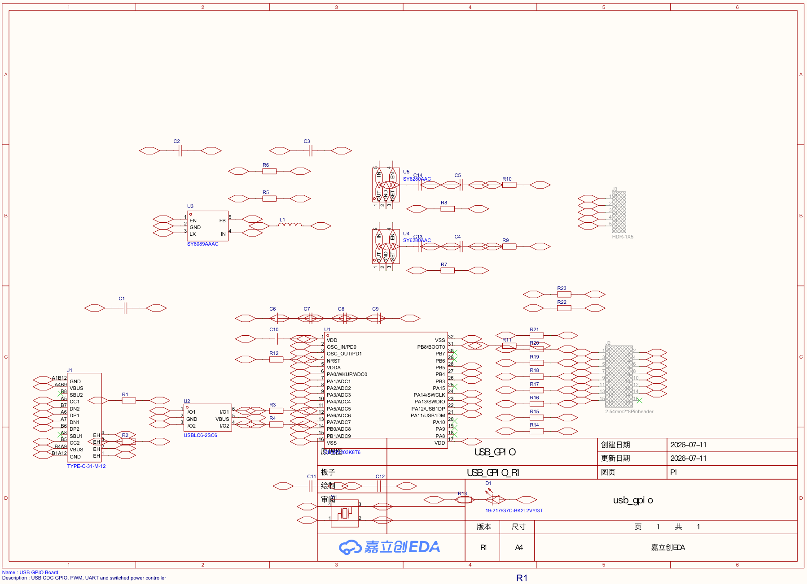

第四部分：在 EasyEDA 中绘制原理图（Part IV — Schematic Capture in EasyEDA）
16. 绘制原理图（Capturing the Schematic）
学习目标
原理图捕获不是把器件图标摆满画布，而是把需求、数据手册和网络关系转换成一份可审计的技术文档。完成本章后，你应能按功能块放置 R1 的全部电路，使用显式网络名表达每个电气节点，并为 PCB、BOM、装配与审核保留一致的数据。
- 按能量流与信号流顺序捕获 USB、电源、MCU 和外部接口；
- 正确处理串联器件两侧网络、USB-C 重复引脚和独立 CC 下拉；
- 填写值、封装、供应商数据和 DNP 状态，并完成位号注释；
- 避免全局电源符号或含糊网络标记造成电源轨塌缩；
- 把原理图排版成另一位工程师能够阅读和复核的技术说明。

usb_gpio/fabrication/R1/usb_gpio_R1_Schematic.pdf（R1，1 页）的本地预览。本图是项目文件证据，用于核对逻辑连接与排版，不是对成品板的物理测量。16.1 放置 USB-C 与保护功能块
从外部世界进入电路的接口先画。将 J1 放在功能块左侧，使信号方向与最终“USB 主机 → 板内电路”一致。随后放置 R1、R2、U2、R3 和 R4。
- 把 J1 的 A6/B6 合并到 D+ 路径，把 A7/B7 合并到 D− 路径；
- CC1 与 CC2 分别经 R1、R2 的 5.1 kΩ 下拉到 GND，不能把两条 CC 线直接短接；
- 把连接器侧数据命名为
USB_DP_CONN/USB_DM_CONN； - 经 U2 后改名为
USB_DP_ESD/USB_DM_ESD； - 经 R3/R4 后改名为
USB_DP_MCU/USB_DM_MCU，连接 U1 的 PA12/PA11； - 把 J1 的 VBUS 引脚连接到
VBUS_IN，外壳与地的处理按已冻结设计表达。
三个分段网络不是多余命名。它们明确了 U2 和串联电阻位于信号路径中，并阻止 PCB 工具用一根铜线绕过器件。
16.2 放置 Buck 变换器功能块
U3 SY8089、L1、C2、C3、R5 与 R6 构成从 VBUS_IN 到 3V3_SYS 的降压电源。原理图应让输入、开关节点、输出和反馈回路一眼可辨。
- U3 输入和 C2 接
VBUS_IN，C2 的另一端接 GND； - U3 开关输出与 L1 输入之间命名为
BUCK_SW； - L1 输出、C3 与负载侧连接
3V3_SYS； - R5 453 kΩ 从
3V3_SYS接到BUCK_FB，R6 100 kΩ 从BUCK_FB接 GND； - 核对 U3 的 EN、GND、FB、SW 与 IN 引脚编号，而不是凭 SOT-23-5 外观猜测。
16.3 放置受控电源功能块
U4 从 VBUS_IN 生成 5V_SW，U5 从 3V3_SYS 生成 3V3_SW。两条输出在电气上和命名上都必须保持独立。
- U4 的使能网为
EN_5V，限流设置网为ISET_5V；R7 最终值为 16.9 kΩ。 - U5 的使能网为
EN_3V3，限流设置网为ISET_3V3；R8 最终值为 27 kΩ。 - 使能下拉 R9/R10 使两路输出在 MCU 复位、高阻和 USB 挂起策略下保持默认关闭。
- 输入/输出电容分别接对应电源与 GND，不要把
3V3_SYS与3V3_SW画成同名电源。
U4/U5 的最终器件没有连接到 MCU 的故障输出网络，因此原理图中不得凭提案设想添加一个并不存在的 POWER_FAULT 信号。
16.4 放置 MCU、去耦、时钟、复位与调试功能块
把 U1 放在中心，围绕相应引脚放置为它服务的器件，而不是把所有电容排在纸面角落。
- 将 U1 所有电源脚接
3V3_SYS，地脚接 GND； - C6、C7、C8 的 100 nF 分别连接
3V3_SYS与 GND，C9 作为较低频储能； - Y1 最终为 12 MHz，连接
OSC_IN/OSC_OUT，C11/C12 各 12 pF 到 GND； - R12 10 kΩ 与 C10 100 nF 构成 NRST 网络，名义时间常数为 1 ms；
- R11 100 kΩ 将 BOOT0 默认拉低；
- J3 按 3V3_SYS、GND、SWDIO、SWCLK、NRST 排列，并标为 DNP。
原理图只能证明这些器件逻辑上连接正确，不能证明 C6–C8 的高频回路足够短；那是布局章节要回答的问题。
16.5 放置 GPIO、PWM、UART 与连接器
R14–R23 位于 MCU 与 J2 之间。每个串联电阻把 MCU 侧网络和外部侧网络分开，便于识别保护边界与测量位置。
| 引脚 | 网络 | 说明 |
|---|---|---|
| 1、2 | GND | 共同参考与返回 |
| 3、4 | 5V_SW、3V3_SW | 受控电源输出，不是 5 V GPIO |
| 5–8 | GPIO0_PWM0–GPIO3_PWM3 | TIM3 四通道，共用频率 |
| 9–12 | GPIO4–GPIO7 | 普通 3.3 V GPIO |
| 13、14 | UART_TX、UART_RX | 3.3 V CMOS/TTL，方向按板端命名 |
| 15、16 | NRST、未连接 | 16 脚应明确标记为有意未连接 |
J2 在 PCB 和坐标表中存在，但最终 BOM 不安装。DNP 是制造属性，不是删除器件；否则用户将失去孔位、机械预留和装配定位信息。
16.6 按功能连线并使用显式网络标签
导线表示局部几何连接，网络标签表示电气身份。EasyEDA 源格式中的导线带有 NET 属性；因此网络名会进入连接图、PCB 焊盘映射和后续检查，而不是仅作为旁注文字。
- 短距离、同一功能块内部用清晰导线连接，交点处确认结点；
- 跨功能块连接使用显式网络标签，标签必须与目标端完全同名；
- 串联电阻、ESD 器件和电感两侧使用不同网络名；
- 重复的 USB-C A/B 引脚只在应合并的功能节点上合并；
- 所有电源和地标签贴到实际导线端点，不能悬空放在附近；
- 完成后生成网络清单，抽查每条网络包含的引脚数是否合理。
16.7 分配数值、封装、供应商数据与 DNP 状态
每个器件实例至少要有唯一位号、值/型号、已验证封装和装配状态。需要采购的器件还应记录制造商料号与供应商料号。不能因为最终 BOM 的 Value 列为空，就把工程源中的器件值解释为未知；R1 的权威值来自最终工程器件元数据。
- R1/R2：5.1 kΩ、R0603；R3/R4：22 Ω、R0603；
- U1：CH32V203K8T6、LQFP-32；U2：USBLC6-2SC6、SOT-23-6；
- U3：SY8089AAAC、SOT-23-5；U4/U5：SY6280AAC、SOT-23-5；
- L1：2.2 µH；Y1：12 MHz、3225-4P；
- J2/J3：
Add into BOM = no，但仍加入 PCB 与 CPL。
任何封装改变都要重新检查引脚—焊盘编号、机械包络、PCB 规则和装配输出，不能把它当作只改一个下拉列表。
16.8 注释位号
位号必须唯一且稳定。推荐按功能块放置完成后统一注释，再进行人工审读，避免删除元件后留下重复或跳转到错误器件。
- 先冻结功能块和器件类别，再执行自动注释；
- 检查 R、C、U、J、L、D、Y 前缀是否与器件类型一致；
- 确认文档中没有重复位号或问号位号；
- 把位号与 BOM、封装属性和后续 PCB 元件身份绑定；
- 发布后若更换器件值而功能相同，优先保留位号；若新增器件，不重排全部既有位号。
R1 最终 PCB 有 48 个物理位号，其中 46 个进入装配 BOM，J2/J3 为 DNP。这个差异是有意制造策略，而不是位号丢失。
16.9 把原理图写成技术交流文档
可读性直接影响审核质量。读者应能在不拖动元件、不打开属性面板的情况下识别电源流、信号方向、器件值、网络名和功能边界。
- 按输入在左、输出在右，电源在上、地在下的惯例组织，但以减少交叉为优先；
- 同类通道对齐，GPIO0–GPIO7 保持一致的阅读顺序；
- 不要用跨整页长线代替网络标签，也不要用标签掩盖功能关系；
- 在电源输出、逻辑电平、DNP 和安全状态处添加简短设计说明；
- 避免文字覆盖导线、结点、引脚号或器件值；
- 打印或导出 PDF 后再审一遍，因为缩放后的可读性常与编辑器画面不同。
16.10 避免电源符号造成意外网络合并
ERC 对引脚类型和未连接问题很有价值，但如果一个错误网络在工具看来仍然“自洽”，它可能不会报告。网络命名审核和端到端电源追踪因此是人工必做项。
16.11 练习：追踪每条电源轨与外部信号
目标：不依赖高亮整板命令，手工证明每条关键路径的起点、串联器件、终点与返回网络。
- 分别追踪
VBUS_IN、3V3_SYS、5V_SW、3V3_SW，写出源、控制器件、负载和 GND 返回； - 追踪 D+、D− 的连接器—ESD—电阻—MCU 三段网络；
- 任选 GPIO0 与 UART_TX，写出 MCU 引脚、MCU 侧网络、串联电阻、外部侧网络和 J2 引脚；
- 检查 J2-16 和 MCU 的有意未连接引脚是否明确标记；
- 交换同伴，要求对方只看原理图复核你的路径表。
通过判据：四条电源轨没有合并，USB A/B 重复引脚合并正确，串联器件没有被同名网络旁路，方向和 J2 引脚号与最终分配一致。
本章小结
高质量原理图同时保存电气连接、器件身份和设计意图。按功能块捕获、使用显式网络名、核对串联器件两侧、保留 DNP 属性并整理排版，可以让后续 ERC、PCB 同步和人工审核基于同一份可追溯事实。